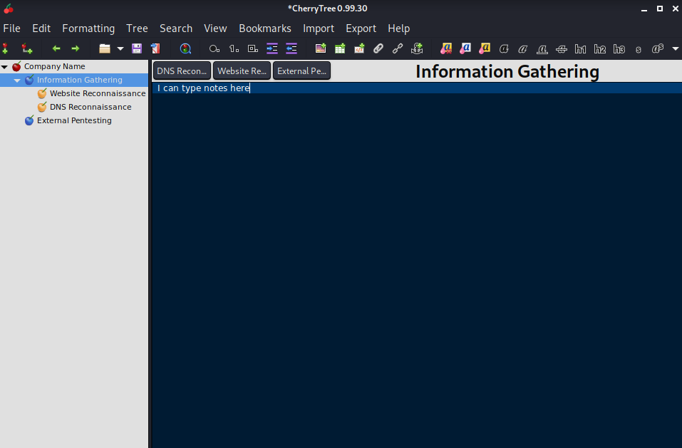
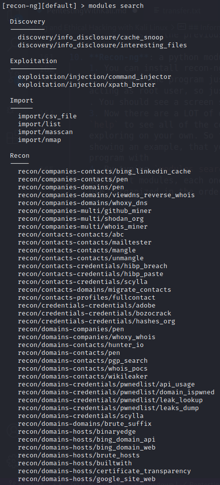

Note: Much of the below information is summarized from Gus Khawaja’s Pluralsight course “Penetration Testing and Ethical Hacking with Kali Linux”. Much credit goes to Gus’s expertise! Check out his blog in the sources and how to get started with Pluralsight
In this post, I will be demonstrating some of the tools and processes used during the Information Gathering (or Passive Reconnaissance) phase of pentesting. For our purposes, reconnaissance is defined as the use of open-sources to gain information about a target
- You’ll want a good place to store all of your notes as you are testing. Kali comes pre-installed with an application called CherryTree, which is essentially a hierarchial text editor with options to add pictures graphs and more:

Website Reconnaissance
- Website Footer: Aside from the basic website search, make sure to focus on the content in the footer of the website to find lots of useful information (About, Management, Press Releases, Careers, Offices & Departments, etc)
- Seek out anything that seems important: names, contact info, sensitive info, acquisitions, used technologies, physical addresses, etc.
- Google Hacking Database/Google Dorks: This is a process used to manipulate the google search function to find more specific results. Here are some of the terms you can use in your searches and what they do:
- cache: URL[string] - searches through google’s cache for information on a specific site, retrieving a copy of the website from google’s cache. The second phrase is optional but will search the selected website for any instances of the provided word
- filetype: [type][string] - searches only for files of a specific type (ex: pdf, docx, xlx) where type is the type of file and string is what you are looking for
- info: [string] - searches for information that google stores about the website itself
- intitle: [string] - searches for pages that contain the string in the title
- inurl: [string] - displays pages with the string in the URL
- site: [string] - displays pages for a specific site or domain with the string To learn more about Google Dorks, many examples can be found here: https://www.exploit-db.com/google-hacking-database
- Document Metadata: the information that is appended to documents so that an application can manage them during their creation and storage (ex: application owner, date/time of creation/modification, network location, geolocation)
- Metagoofil: Tool that performs a google search to identify and download a target’s website documents, extracting usernames, software versions, server names, and workstation names. The ultimate goal here as a pentester is to make sure there are no results from tools like this on your client’s site. Here are some of the common flags:
-d domainName- specifies the domain name-t fileType- specifies the file type you are searching for-o localDirectory- specifies the working directory where we want to save our results-f- indicates that you want the results to be saved as a txt file in provided directory (will be named “html_links_timestamp.txt”)- Example:
metagoofil -d exampleSite.com -t pdf -o temp -f- uses google to search exampleSite.com for any pdfs and saves the results in a the temp directory
- TheHarvester: python script that searches through popular search engines and other sites for email addresses, hosts, and sub domains
-d domainName- identifies the domain to be searched-b searchEngine- identifies the tool that will be used to extract the information (ex: Google, Bing, etc.). Can also just putallto specify all options-l number- wherenumberindicates the limit of returned search results- Example:
theHarvester -d exampleSite.com -b google -l 100- will use google to search the website exampleSite.com, limited to 100 search results, in an attempt to find any emails, IPs, or hosts (in this case nothing was found as it is just a placeholder website)

- Whois: a request that will return the names, physical addresses, phone numbers, email addresses, IP address, and DNS server names. You can pay to register a DNS to be secure from queries like this
- Example:
whois exampleSite.com- will return all information that can be found about exampleSite.com followed by a long list of where that information was retrieved from
- Example:
- DNS Reconnaissance: identifying who owns a particular domain or series of IP addresses
- Fierce: Tool that will run tests on given domains to attempt to find IP addresses, subdomains, hosts, and other sensitive information about a given domain
--domain domainName- specifies the domain to run the tests on- Example:
fierce --domain exampleSite.com- will return all information that can be found from running tests on exampleSite.com
- Fierce: Tool that will run tests on given domains to attempt to find IP addresses, subdomains, hosts, and other sensitive information about a given domain
- Deepmagic Information Gathering Tool (Dmitry): command line program written in C with the goal of finding out information about a host. This tool is especially useful for its speed by removing the need to enter multiple commands when searching through information different sources. For simplicity’s sake, I included all of the testing flags in the example below, for specifics on each flag, run
dmitry -h. The general idea is that this command runs many of the previous tests in addition to some new ones all at once and will save the results in a text file- Example:
dmitry -winsepfbo s0merset7.github.io- will perform every test (including whois lookups, search for subdomains and email addresses, TCP port scans, and more). Here is an example of the first few results found in the text file created after the program is run:
- Example:
-
Discover Scripts: a framework with the goal of quickly conducting a passive reconnaissance by automating a lot of searches into one tool, including many of the ones we have been using previously
- Download the Discover github project by running
git clone https://github.com/leebaird/discover.gitor visit https://github.com/leebaird/discover to see the project yourself - To start the program,
cdinto the newly created “discover” directory and run./discover(you must be running this program as root or else the program will not work properly) - At first you will see a menu with lots of options, feel free to explore, however we will be focusing on the “RECON” section as that is for Passive Reconnaissance
- Type
1and press enter to select the “Domain” option which will then prompt another menu. Select option 1 again, “Passive”
- Using the example, provide the name of the company you are scanning and the domain name and start the scan
- The scan may take a while, but when finished, it will store the scan results in an index.html file under /root/data/domainName
- There will also be an option to press enter, upon doing so, Firefox will be used to open lots of tabs that show how the program got much of its information for you to be able to look at it yourself (this may also happen automatically so don’t be alarmed if a bunch of new browser tabs start opening)
- The final tab that is opened (if not you can open up the index.html file in /root/data/domainName) should be the summary file. This will appear as a browser tab with drop down options that summarize all of the information gathered from the scan. You can explore all of the information, much of it will be similar to what we found using the previous tools

- Download the Discover github project by running
-
Recon-ng: a python module based framework that allows you to perform a variety of different tests on websites one at a time to see the progress of information found
- You can install recon-ng with
apt-get install recon-ng - To start the program just run
recon-ng(this assumes you are acting as root user, so just addsudoto the front if you are not). You should see a screen similar to this:

- Now there are a LOT of different functions of this program (type
helpto see all of the commands), and the best way to learn is by exploring on your own. So for the rest of this section, I will be showing an example, that you can then use to explore the rest of the program with - Lets create workspace for this example. This option allows users to conduct tests without having to configure global options or databases repeatedly. To do this, type
workspaces create namewherenameis what you choose to call your workspace. I will call mine “example” - By typing
modules search, you should see a list of all the different modules, each one showing a different tool that you can use, organized in the order of the normal flow of a penetration test

- To access a module, type
modules load moduleNamewheremoduleNameis your selected module from the list. If the name is unique enough, you don’t have to type the entire name, for our example lets typemodules load brute_hosts, this will try and brute force hosts from a word list when given a domain - Once in the module, type
infoto see a description on how to use the module.
We can here that in addition to instructions for use, under “Options” there is a “SOURCE” that we need to set to the domain we want to be searching. To do so, run
options set SOURCE domainNamewheredomainNameis your domain. For the example, I will use my blog site s0merset7.github.io 8. Once the SOURCE (the domain) is set, we can run the test by typingrun9. If you wanted to run another test module, you can type the same commandmodules load moduleNamefrom inside the current module, or usebackto first exit the module, search for a new one, and then use themodules loadcommand 10. Since I’m using github to host my site, the test found almost every host on its wordlist to be a match. Normally this will not be the case. To see all of the matches, runshow hostsand it will display a table with the hosts, along with IP Addresses, Region, Country, and more. We can run other modules to fill in the missing values
Some other modules we can use to fill in the missing information are:
brute_hosts- module that we used, will compare domain to a word list and also try and find corresponding IPshosts-hosts/resolve- will try and update IPs to found hostshosts-hosts/reverse_resolve- will try and update IPs to found hostsipinfodb- will try and find all information of a given IP, specifically geographical locations- to use this tool, you will need to register a free account on https://www.ipinfodb.com/ and get an API key from them. With the API key, run
keys add ipinfodb yourApiKey. Then you will be able to run the ipinfodb module
- to use this tool, you will need to register a free account on https://www.ipinfodb.com/ and get an API key from them. With the API key, run
- If you run
show hostsnow, you should be able to see most of the information filled in. You can also rundashboardat any time to see how many values you have in the database and the different modules you have run

- We also have the option of condensing all of our findings to a report. Run
modules load htmlto get to the html module. Upon runninginfo, we can see we need to set a CREATOR and CUSTOMER value. For the example I will set them tooptions set creator Somersetandoptions set customer mywebsite. Once we typerun, we can see that a report has been generated at/root/.recon-ng/workspaces/example/results.html
- Finally, to open this file, copy paste the given file path (in my case
/root/.recon-ng/workspaces/example/results.html) into the search bar of your browser of choice. You should be able to see something similar to this:

- You can install recon-ng with


Please share using the links if you enjoyed!